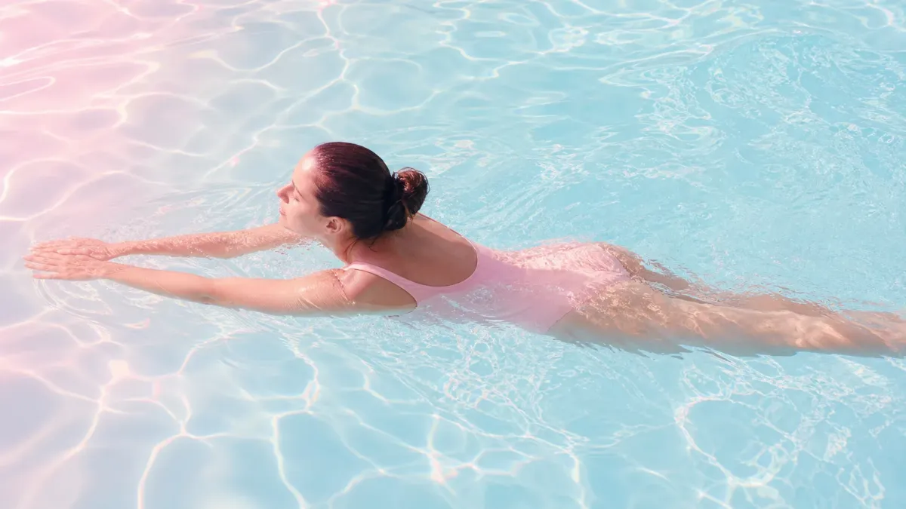

水泳ダイエットは本当に効果があるの？
結論からお伝えすると、水泳は全身の筋肉を使う有酸素運動のため、ウォーキングやジョギングと比べて短時間でも多くのエネルギーを消費しやすい運動です。
水の抵抗が陸上の約800倍あるため、ゆっくり泳いでも体への負荷が高く、関節への衝撃が少ないのも特徴。膝や腰に不安がある方にも取り組みやすい運動として知られています。
ただし「泳ぐだけで劇的に痩せる」というわけではなく、継続と食事のバランスが大切です。焦らず、まず4週間を目標に始めてみましょう。
水泳の消費カロリーの目安
泳ぎ方によって消費カロリーは異なります。体重50〜60kgの女性が30分泳いだ場合の目安は以下のとおりです。
- 🏊 クロール：約200〜280kcal
- 🏊 平泳ぎ：約160〜220kcal
- 🏊 背泳ぎ：約180〜240kcal
- 🚶 水中ウォーキング：約100〜150kcal
同じ30分のウォーキング（約80〜100kcal）と比べると、水泳の消費カロリーは約2〜3倍の目安になります。
🏊♀️ 水泳ダイエット｜週3回・4週間プランの全体像
初心者でも無理なく続けられる4週間ロードマップ
1回20〜25分
週3回（月・水・金など）
1回25〜30分
週3回継続
1回30〜35分
インターバル導入
週3〜4回に増やしてもOK
約160〜280kcal
同時に使える
衝撃が少ない
初心者向け！週3回・4週間の水泳ダイエットプラン
上のインフォグラフィックをもとに、各週のポイントを詳しく解説します。
Week 1：まずは水に慣れる（1回20〜25分）
いきなり泳ぐのではなく、水中ウォーキングから始めるのがおすすめです。水の抵抗だけで十分な負荷になります。週3回、月・水・金など1日おきに設定すると休養が取れて続けやすくなります。
Week 2：平泳ぎを取り入れる（1回25〜30分）
平泳ぎはゆっくりでも全身を使えるため、初心者に向いています。水中ウォーキング15分＋平泳ぎ10〜15分の組み合わせから始めてみましょう。
Week 3：インターバル泳ぎで負荷を上げる（1回30〜35分）
「25m泳いで30秒休む」を繰り返すインターバル形式を取り入れると、脂肪燃焼効率が高まりやすいとされています。クロールが泳げる方はクロールを中心にしてもOKです。
Week 4：自分のペースで定着させる（1回30〜40分）
好きな泳ぎ方で30〜40分を目標にしましょう。週3回が習慣になってきたら、週4回に増やすのも一つの選択肢です。無理のない範囲で継続することが最優先です。
ダイエット効果を高める3つのポイント
① 泳ぐ前後のストレッチを忘れずに
水泳前後に5〜10分のストレッチを行うことで、筋肉の疲労回復をサポートします。特に肩・股関節・ふくらはぎを重点的に伸ばしましょう。
② プール後の食事は「補給」を意識する
水泳後は体が栄養を吸収しやすい状態になります。運動後30〜60分以内にたんぱく質を含む食事や軽食を取ることで、筋肉の回復を助けます。鶏むね肉・ゆで卵・プロテインなどが手軽です。
食事管理も同時に意識したい方は、1週間本気ダイエットの食事＋運動プランも参考にしてみてください。
③ 水泳の日以外も体を動かす
週3回の水泳以外の日は、10〜15分の軽いストレッチやウォーキングを取り入れると、代謝を維持しやすくなります。完全休養日も週1〜2日は必要です。
水泳ダイエットで注意したいこと
- 🚫 空腹時の激しい水泳は避ける：低血糖になるリスクがあるため、軽食を取ってから入水しましょう
- 🚫 食後すぐの入水も避ける：食後1〜2時間は消化のために休憩を
- 🚫 毎日泳ぎすぎない：筋肉の回復には休養が必要。週3〜4回が目安です
- 🚫 水泳後に食べすぎない：水泳後は食欲が増しやすいため、食事量に注意
水泳と食事を組み合わせるとより効果的
運動だけでなく、日々の食事を整えることでダイエットの効率が上がります。特にたんぱく質・野菜・炭水化物のバランスを意識した食事が基本です。
何から始めればいいかわからない方は、ダイエットを続けるための習慣づくりの記事も合わせてチェックしてみてください。
よくある質問
Q. 泳げなくても水泳ダイエットはできますか？
はい、できます。水中ウォーキングだけでも十分な有酸素運動になります。水の抵抗があるため、陸上のウォーキングより消費カロリーが高く、全身の筋肉を使えます。まずは浅いプールで水中ウォーキングから始めてみましょう。
Q. 水泳ダイエットの効果はいつ頃から感じられますか？
個人差はありますが、週3回のペースで2〜4週間継続すると、体の引き締まりや疲れにくさなどの変化を感じる方が多いようです。体重の変化よりも先に「体が軽くなった」「姿勢が良くなった」と感じるケースもあります。焦らず4週間を目標に続けてみてください。
Q. 生理中でも水泳ダイエットを続けていいですか？
体調が優れない日は無理をしないことが大切です。生理中は体への負担が大きくなりやすいため、水泳を休んで軽いストレッチや散歩に切り替えるのも良い選択です。タンポンを使用すれば入水できる場合もありますが、体調を最優先に判断してください。